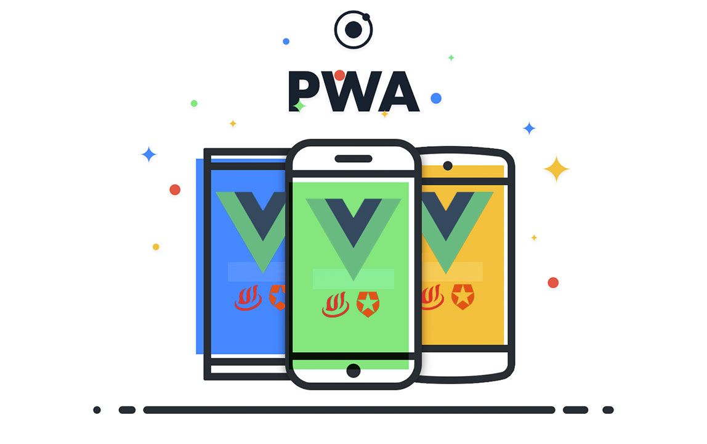

Aprende sobre las PWA
 Aplicaciones Web Progresivas
Aplicaciones Web Progresivas
VENTAJAS


Experiencias nativas:
- Las PWA tienen sus propios iconos de aplicación que se pueden agregar a la pantalla principal o barra de tareas de un dispositivo.
- Las PWA se pueden iniciar automáticamente cuando se abre un tipo de archivo asociado.
- Las PWA se pueden ejecutar cuando el usuario inicia sesión.
- Las PWA se pueden enviar a almacenes de aplicaciones, como Microsoft Store.
Funcionalidades avanzadas:
- Las PWA pueden seguir funcionando cuando el dispositivo está sin conexión.
- Las PWA admiten notificaciones push.
- Las PWA pueden realizar actualizaciones periódicas incluso cuando la aplicación no se está ejecutando.
- Las PWA pueden acceder a las características de hardware.
Ventajas relacionadas con la web:
- Los motores de búsqueda pueden indexar las PWA.
- Las PWA se pueden compartir e iniciar desde un vínculo web estándar.
- Las PWA son seguras para los usuarios porque usan puntos de conexión HTTPS seguros y otras medidas de seguridad de usuario.
- Las PWA se adaptan al tamaño o la orientación de la pantalla del usuario y al método de entrada.
- Las PWA pueden usar API web avanzadas como WebBluetooth, WebUSB, WebPayment, WebAuthn o WebAssembly.